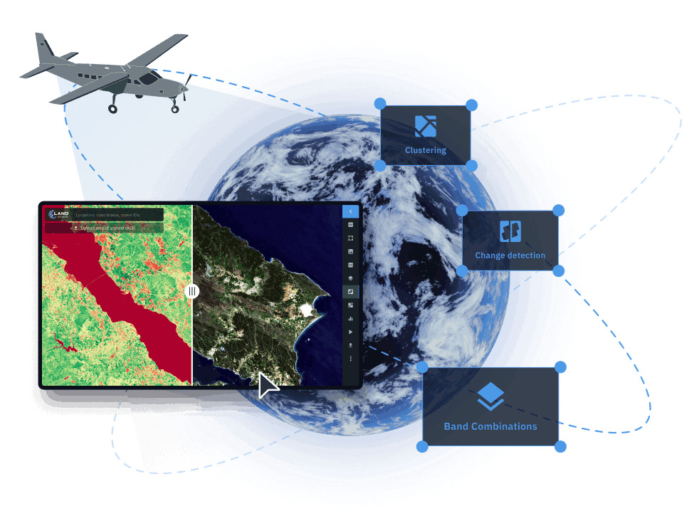
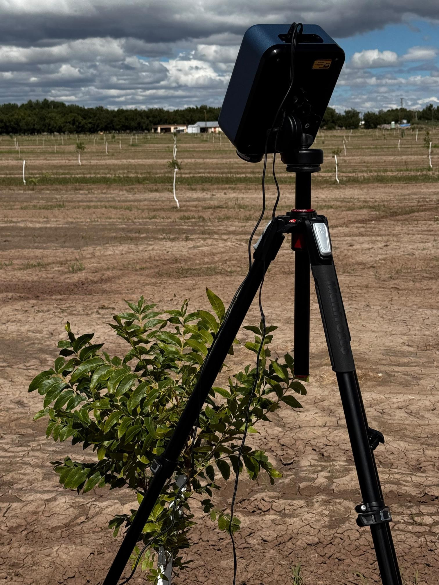

These case studies are being developed through the collaboration between the University of Texas at El Paso (UTEP) and the Universidad Autónoma de Chihuahua (UACH). They will provide opportunities for students to apply remote sensing and image-processing concepts to agricultural monitoring problems using observations from the Mesilla Park, New Mexico, study area.
Unlike the instructional laboratories, which introduce specific processing techniques, these proposed case studies emphasize selecting appropriate observations, interpreting results, evaluating limitations, and communicating conclusions. They have not yet been implemented with students.
Case Study 1: Agricultural Field Monitoring Using Multispectral Satellite Imagery
How do vegetation conditions vary across selected agricultural fields, and what can be determined from satellite observations? Students will investigate spatial variations in vegetation using Sentinel-2 Level-2A surface reflectance imagery and consider the limitations of moderate-spatial-resolution measurements.
Proposed activities
Select agricultural fields in the Mesilla Park study area and obtain a suitable cloud-free Sentinel-2 Level-2A scene. Record the acquisition date and relevant image characteristics.
Identify the red and near-infrared bands and calculate the Normalized Difference Vegetation Index (NDVI) for the selected fields.
Prepare an NDVI map with a legend and identify regions showing different vegetation-index values.
Calculate summary statistics for selected fields or regions of interest and compare their spatial patterns.
Interpret the observed differences in the context of vegetation coverage and field conditions. Discuss alternative explanations, including exposed soil, mixed pixels, crop differences, and acquisition timing.
Explain what additional field observations or imagery would be needed to support conclusions about crop condition or vegetation stress.
Expected deliverables
An NDVI map, a field-level comparison table, and a short technical report explaining the observed patterns, possible interpretations, and limitations of the analysis.
Suggested tools: Copernicus Browser, Python (Google Colab), ENVI, or MATLAB. Data source: Sentinel-2 Level-2A imagery (10 m/pixel for red and NIR bands).
Case Study 2: Agricultural Field Monitoring Using High-Resolution Aerial Imagery

National Agriculture Imagery Program (NAIP). Image credit: EOS Data Analytics.
Problem and objective
How does higher spatial resolution improve the identification of vegetation and exposed soil within agricultural fields? Students will use NAIP aerial imagery to examine field boundaries, crop patterns, tree canopies, and areas of exposed soil, and compare their observations with satellite imagery where suitable dates are available.
Proposed activities
Obtain NAIP imagery covering selected agricultural fields near the SunGro facility in Mesilla Park. Record the acquisition date, pixel size, and available bands.
Identify representative areas of crops, trees, exposed soil, and other visible agricultural features.
Calculate NDVI if red and near-infrared bands are available, or an appropriate visible-band vegetation index such as Excess Green (ExG) if only RGB data are available.
Generate a vegetation-index map and identify areas of vegetation and exposed soil. Estimate vegetation coverage in selected regions using a documented classification or thresholding approach.
Compare the NAIP results with Sentinel-2 observations, when acquisition dates and band characteristics permit a meaningful comparison. Examine differences in field boundaries, crop rows, and individual tree canopies.
Discuss how image date, spatial resolution, and spectral band availability influence the interpretation of agricultural conditions.
Expected deliverables
A high-resolution vegetation map, estimated vegetation coverage for selected areas, a comparison with satellite observations, and a short technical report explaining the added detail and remaining limitations.
Suggested tools: USGS EarthExplorer, Python (Google Colab), ENVI, or MATLAB. Data source: NAIP aerial imagery (spatial resolution and band availability depend on the acquisition).
Case Study 3: Spectral Characterization of Vegetation and Soil Using Ground-Based Hyperspectral Imagery

Surface Optics Corporation hyperspectral camera.
Problem and objective
Can vegetation and exposed soil be distinguished using their detailed spectral reflectance characteristics? Students will analyze ground-based hyperspectral observations acquired during the field campaigns and investigate how spectral information can support agricultural material identification.
Proposed activities
Obtain a prepared hyperspectral scene cube and corresponding white-reference and dark-reference measurements from the project dataset.
Review the sensor's wavelength range and spectral sampling, and inspect selected bands to locate vegetation and exposed-soil regions.
Use the reference measurements to convert the scene data into reflectance, following the calibration procedure introduced in the hyperspectral laboratory.
Extract and plot reflectance spectra from representative vegetation and soil regions of interest.
Identify wavelength regions where the materials show distinct spectral responses. Calculate appropriate indices or band ratios supported by the available wavelength range.
Evaluate whether the observed spectral differences are sufficient to distinguish vegetation and soil in the selected scene. Discuss illumination, calibration, sample variability, and the limitations of the measurements.
Explain how ground-based spectral observations may complement satellite or aerial imagery, without assuming that measurements at different scales are directly interchangeable.
Expected deliverables
Selected reflectance images, vegetation and soil reflectance plots, a comparison of spectral features, and a short technical report describing the evidence supporting material discrimination and the limitations of the analysis.
Suggested tools: Project hyperspectral datasets, Python (Google Colab), ENVI, or MATLAB. Data source: Ground-based hyperspectral observations from the Mesilla Park field campaigns. Spatial resolution depends on the imaging setup and working distance.
Connecting the Case Studies to the Laboratories
The proposed case studies build on skills developed in the Remote Sensing Laboratories, including vegetation-index calculations, spectral reflectance calibration, spatial-resolution comparisons, and image classification. In the case studies, students will use those skills to address specific agricultural monitoring questions and evaluate the evidence and limitations of their conclusions.